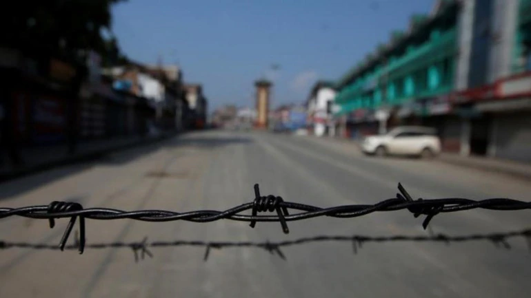

The Supreme Court will today deliver its verdict on petitions filed against restrictions imposed in Kashmir. The three judge bench had earlier reserved the judgment on November, 27, last year

Supreme Court will today deliver its verdict on pleas against restrictions imposed in Kashmir post abrogation of Article 370. A bench of Justice NV Ramana, Justice R Subhash Reddy and Justice BR Gavai had earlier reserved the verdict on November, 27.
The petitions were made by Congress leader, Ghulam Nabi Azad, Anuradha Bhasin, Executive Editor of Kashmir Times, among few other interveners .
On November 21, the Centre had justified restrictions imposed in Jammu and Kashmir after the abrogation of provisions of Article 370 and said that due to the preventive steps taken, neither a single life was lost nor a single bullet fired.